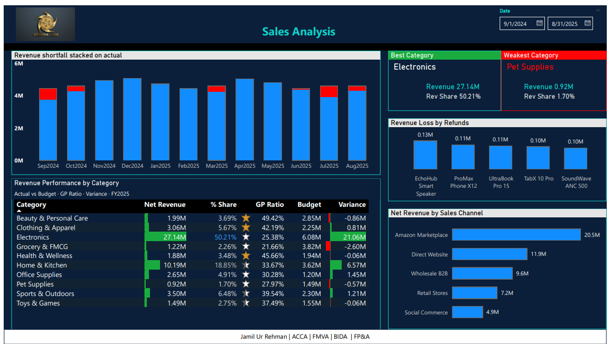
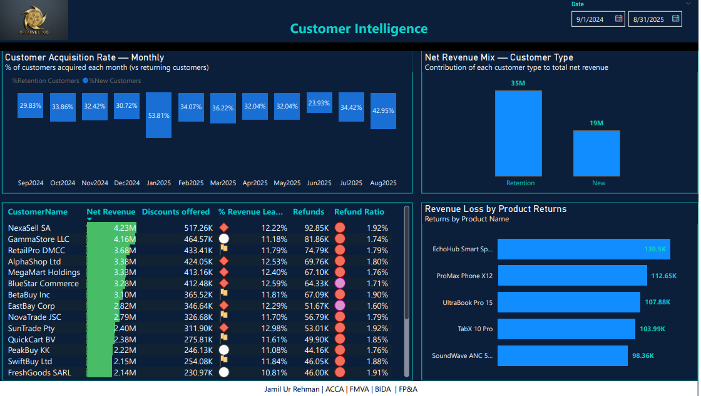
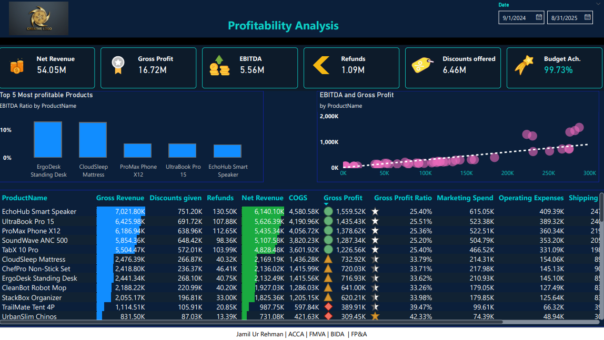
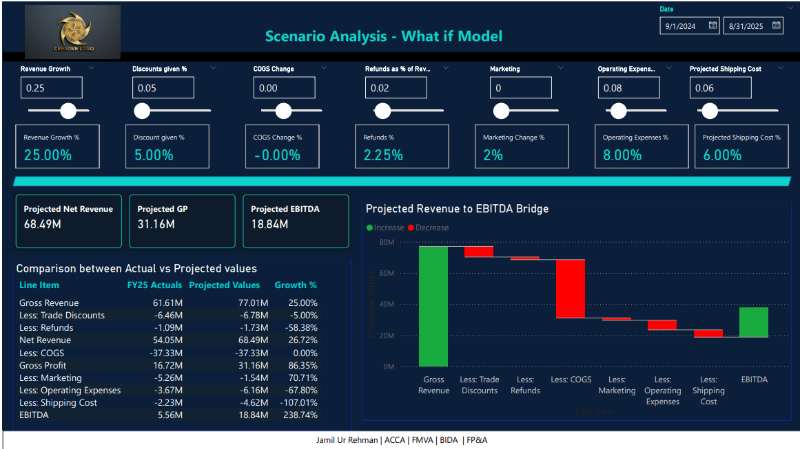

The report
What it looks like
Click any image to view it full size.
1. FP&A model summary

2. Sales analysis

3. Customer intelligence

4. Profitability analysis

5. Customer aging report
6. Scenario / what-if model
